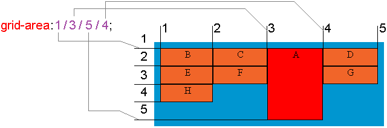

Свойство grid-area — определяет размер и расположение элемента сетки в макете сетки, а также может использоваться для присвоения имени элементу сетки.

.item {
grid-area: grid-row-start / grid-column-start / grid-row-end / grid-column-end | item_name;
}| grid-row-start | Определяет сколько строк будет занимать элемент, или на какой строке начинается элемент в макете сетки. |
| grid-column-start | Определяет сколько строк будет занимать элемент, или на какой строке заканчивается элемент в макете сетки. |
| grid-row-end | Определяет с какого столбца будет расположен элемент в макете сетки, или какое количество столбцов будет охватывать элемент. |
| grid-column-end | Определяет сколько столбцов будет занимать элемент, или на какой строке столбца завершится элемент. |
| item_name | Задает имя элемента сетки. Нельзя использовать с grid-... свойствами. |
<div class = "grid-container">
<div class = "item-a">Header</div>
<div class = "item-b">Main</div>
<div class = "item-c">Footer</div>
<div class = "item-d">Navigation</div>
</div>
.grid-container {
display: grid;
grid-template: repeat(4, 40px) / 1fr 1fr 1fr 1fr;
}
.item-a { grid-area: 1 / 1 / 2 / 5; }
.item-b { grid-area: 2 / 2 / 4 / 4; }
.item-c { grid-area: 4 / span 4 / 5; }
.item-d { grid-area: 2 / 1 / span 2 / 2; }